说明：因子工具操作手册【功能已停服，请勿使用】
⚠️为保障服务稳定，此功能不再开放，请勿使用！
一、背景
北京业务安全中心和其他长期使用Zeus用户，积累了很多风控经验，在风控经验输出和复用上zeus当前流程较为复杂，通过共享实现，但共享后仍存在被他方篡改问题存在安全隐患。由规则组生成因子工具可快速便捷提供集团内其他业务使用，相较于提供规则组直接服务可节省人力和提升安全性。
实现方式：策略PM可以自主定义规则组并打包成因子工具提供第三方使用，打包的逻辑可以自行配置
二、名词说明
因子工具：一类通用工具具备因子属性，可通过配置阈值等条件进行引用，输出为评分。使用方不可进行修改只能使用，使用前类似与场景接入方式进行引用接入。例如虚拟设备评分就是对虚拟设备识别的因子工具；
三、操作指南
3.1使用因子工具提供服务的全流程概述
- 基于规则组生成因子工具
Quick Start
- 固定逻辑模版的因子工具
类似于累计因子、决策表因子、K-V因子需业务提需求进行固定逻辑模版的定制化开发
3.2 规则组生成因子工具
Step1:创建因子工具的输出参数
|
操作说明 |
页面 |
|---|---|
|
入口： 参数列表-->添加参数 |
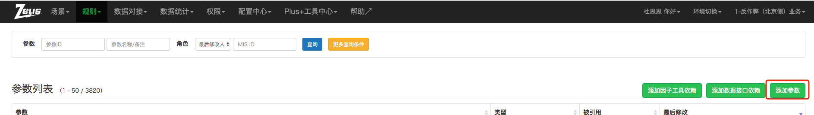 |
|
添加： 当前因子工具输出参数仅有数字格式，可选择整型、长整型、浮点型、双精度型、高双精度型 |
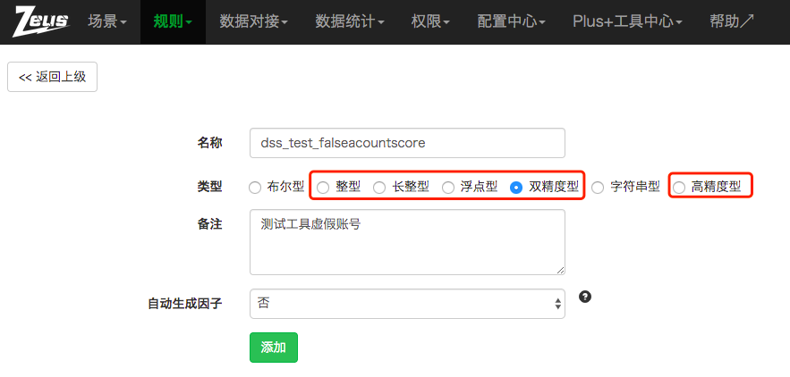 |
Step2:创建因子工具、自定义设置输出逻辑
目前因子工具的输出，仅仅支持评分的配置，即规则组中的规则命中计分
|
操作说明 |
页面 |
|---|---|
|
入口： （1）规则组列表页面-->生成工具； （2）规则组列表页面-->某个规则组操作-->生成工具； （3）因子工具列表-->添加因子工具 |
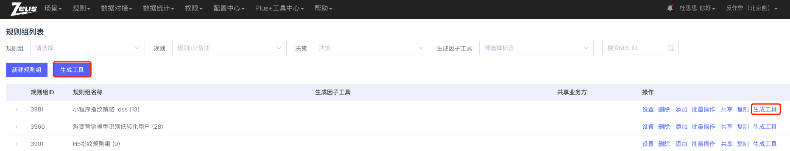 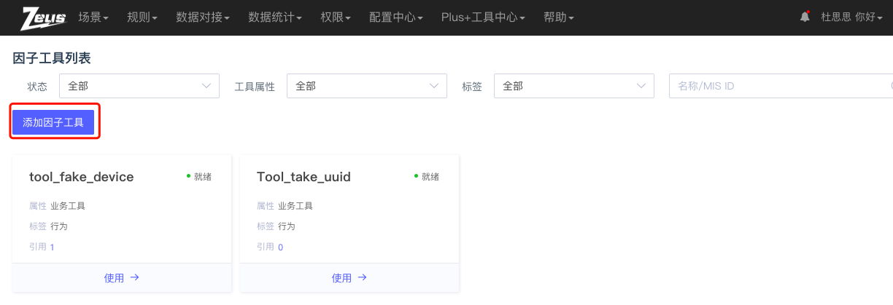 |
|
创建： （1）填写中英文名称 （2）选择基于哪个规则组创建 （3）配置因子工具必选的入参 ⚠️该入参配置不影响规则的执行，仅作为提供给使用方的展示信息，用户告知使用方想要使用该因子工具必须要提供的参数字段保证逻辑的正常执行（类似于数据接口的输入字段） |
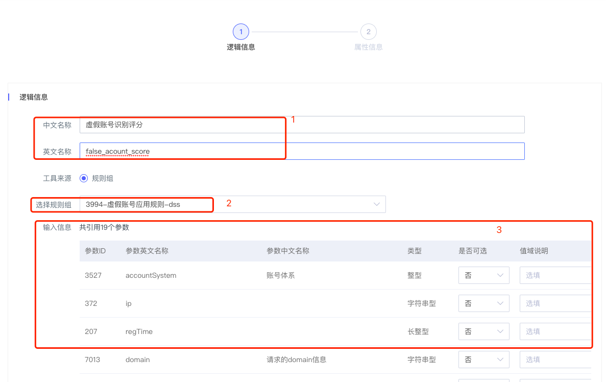 |
|
创建： （4）添加输出参数，支持添加多个 ⚠️输出参数作为因子工具中规则执行逻辑结果的承载对象（类似于数据接口的输出字段） （5）设置输出参数的逻辑 目前支持按照去重规则配置得分，类似于评分卡的逻辑实现（求和命中规则的计分项，优先级仅作为展示信息不参与计分）。 默认分数为1分，用户可自定义调整 ⚠️若在规则组中新增规则，默认为空需要用户手动补充新增规则的分数 (6)使用模版选择 使用因子工具创建因子的时候，选择的配置模版。默认选择数字即可 |
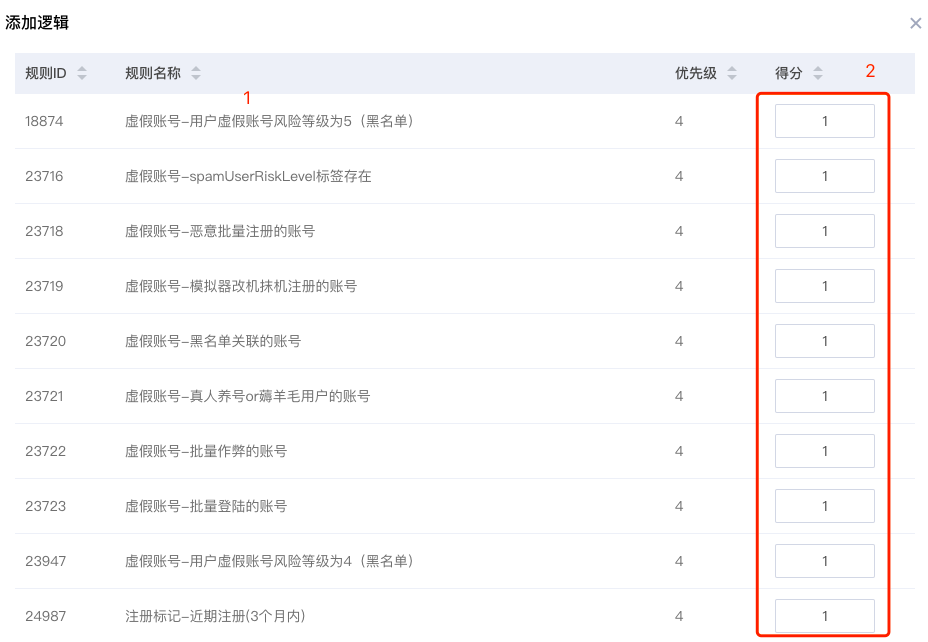 |
Step3:设置因子工具的共享业务方和使用业务方
|
操作说明 |
页面 |
|---|---|
|
因子工具属性信息配置： （1）工具分类：非ZeusRD请选择业务工具 （2）服务分类：非名单、非累计类工具，请选择行为 （3）说明：按业务诉求填写，可为空 （4）共享业务方：具有该因子工具输出逻辑修改权限的业务方 （5）使用方：尽可以使用因子工具创建因子，但不可以修改因子工具的配置逻辑，例如输出逻辑、输入参数等； |
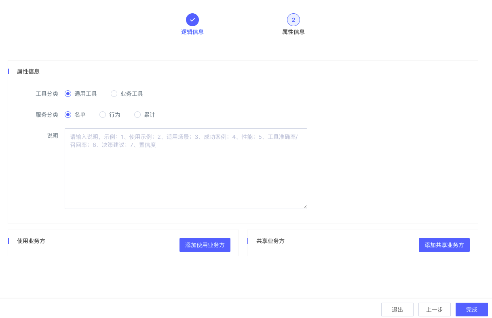 |
Step5:因子工具创建完成
点击“完成”后，即完成因子工具的创建。此时在因子工具列表页面中可看见新增的因子工具；
3.3使用因子工具
Step1:创建因子（使用因子工具生成的因子）
|
操作说明 |
页面 |
|---|---|
|
入口： （1）因子创建页面 （2）因子工具列表页面 |
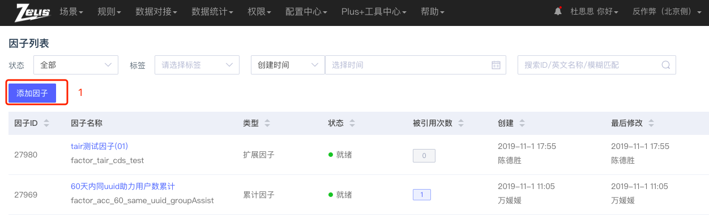 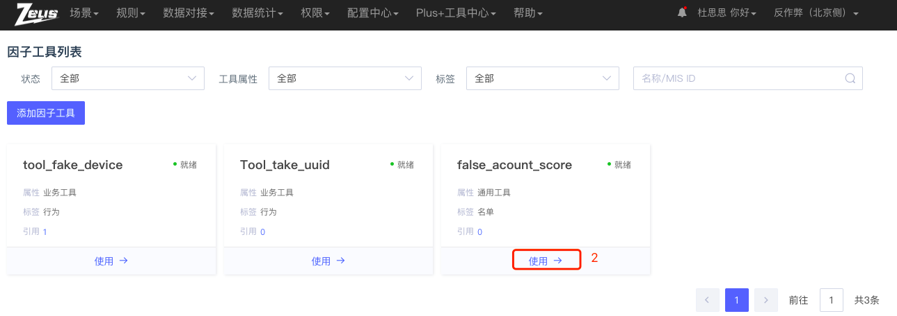 |
|
创建因子 （1）选择因子工具 （2）选择要使用哪个因子工具 （3）基于因子工具的设置逻辑 ⚠️因子内容中目前仅支持因子工具的输出参数各种逻辑配置，暂不支持复合其他参数进行配置。 |
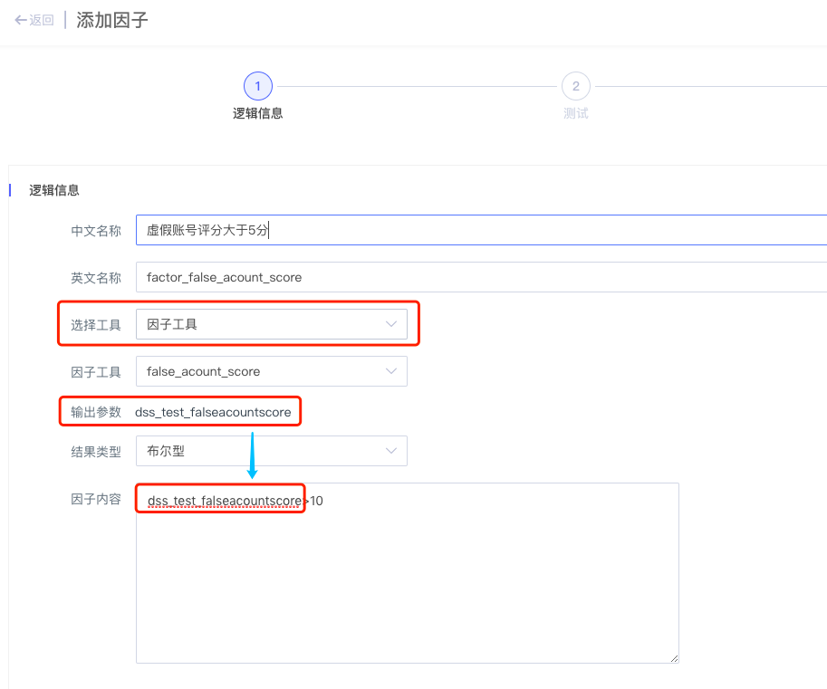 |
Step2:因子的应用
在规则中引用配置的因子，正常配置即可，支持同其他因子复合配置；
3.4特殊说明
1、因子工具的输出参数目前仅支持数字格式，包含整型、长整型、浮点型、双精度型、高双精度型
2、因子工具的执行日志说明：
|
角色 |
角色说明 |
因子工具的日志 |
|---|---|---|
|
使用方 |
使用因子工具输出结果的业务方/通过因子工具创建了因子的业务方 |
只有因子工具输出参数的结果（无生成因子工具的规则组中规则具体执行信息） |
|
创建方 |
因子工具的创建方，维护因子工具输出参数逻辑 |
因子工具输出参数的结果、生成因子工具的规则组中规则的命中情况、生成因子工具的规则组中规则具体执行信息 |
3、因子工具执行不符合预期的验证方式：
（1）查询某个请求因子工具的执行结果（单个请求）
-
通过日志查询单条请求不符合预期的情况，查询方式如下：
查询引用因子工具的规则，查看规则为什么命中
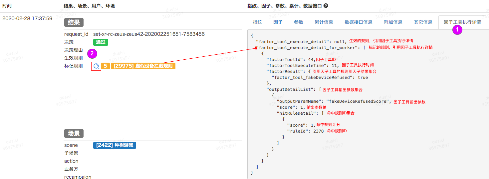
-
通过排查探针查询单条请求不符合预期的情况，查询方式；
上图中的放大镜支持点击，可查看命中回放
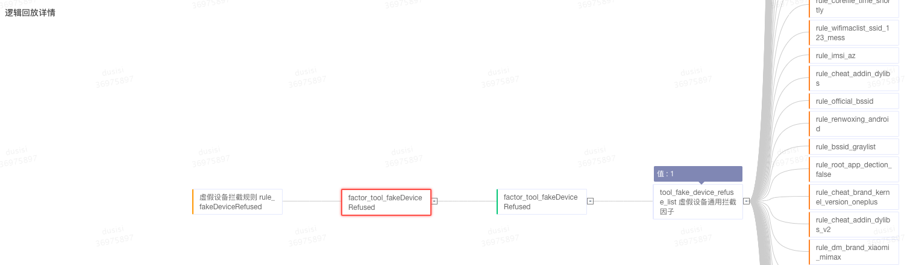
（2）查询某个因子工具近期请求的执行结果（批量请求）
在实时日志查询中，通过因子工具ID，查询因子工具在线上（被生效和标记规则引用）的执行情况，若您的日志查询中无该字段，请联系您的业务管理员在日志配置中进行配置
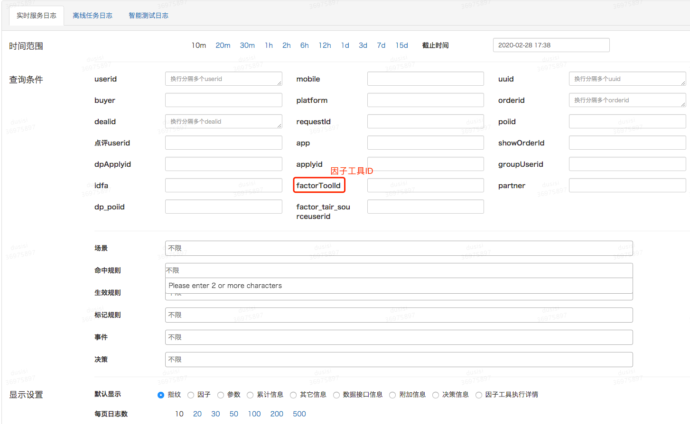
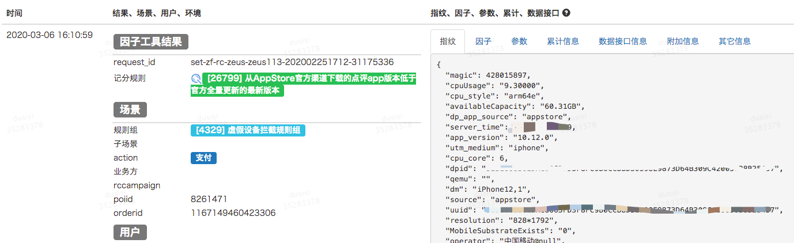
四、常见QA
1、若是修改了规则组，因子工具的逻辑是怎么变化的？
--A：修改规则组逻辑不会直接影响因子工具的配置，需要用户手动触发同步配置信息，才会将修改后的逻辑同步至因子工具；
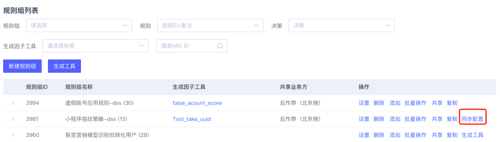
2、为什么规则组的生成因子工具有的显示内容，有的没有显示？
--A：有生成因子工具的规则组才会显示因子工具名称；
3、规则组后面操作的“同步配置”是什么意思？
--A：对于生成因子工具的规则组，当规则组中的内容与因子工具内引用的规则组配置信息不同时（用户修改了规则组），就会显示同步配置；默认修改逻辑不会同步至因子工具；
4、规则组已经删除了因子工具还会存在么？
--A：规则组可以正常删除成功，因子工具仍会存在。若需要删除，可在因子工具列表页面删除因子工具。若需要修改因子工具，因规则组已经删除无法修改；
5、如何创建规则组？
--A：说明：规则组使用文档
6、如何查看因子工具执行数据详情？
--A：见3.4-3中的说明
7、为什么我看不到因子工具执行详情数据？
--A：若您是创建/维护因子工具逻辑的用户，在您的创建业务方空间下看不到因子工具执行详情数据，请联系Zeus值班；若您是使用因子工具的应用方（因子工具的逻辑不是您维护的，您只使用结果），那您正常就是看不到因子工具执行详情，仅能在日志-参数列中看到因子工具的执行结果、日志-因子列看到因子工具生成的因子值。